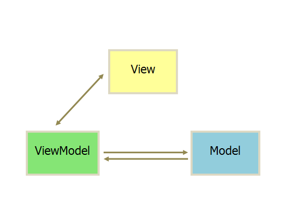
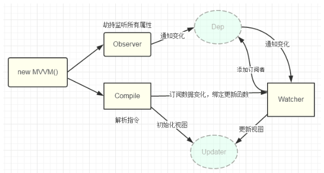
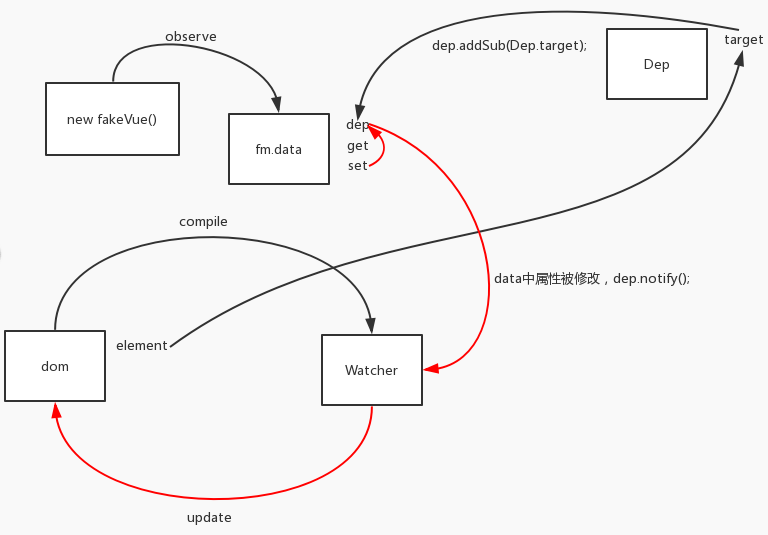

vue系列-1-数据绑定原理
vue 的数据绑定内部是如何实现的，本文一探究竟。
VUE设计思想之MVVM模式
示意图

- view:视图层,对应DOM
- model:数据层,就是业务逻辑相关的数据对象(js对象等)
- viewModel:连接数据和视图的中间件
设计原理
- 在MVVM架构下View和model是不能直接通讯的,需要ViewModel来做通讯。
- ViewModel通常要实现一个observer（观察者），当model变化时，通知view层自动更新；当用户操作view层时，通知model层数据变化，这就是实现了数据跟视图的双向绑定。
Vue.js与MVVM模型的联系
可以这样理解vue框架对应MVVM模型关系：

Observer相当于Model层：观察vue实例中的data数据，当数据发生变化时，通知Watcher订阅者。
Compile指令解析器位于View层，初始化View的视图，将数据变化与更新函数绑定，传给Watcher订阅者。
Watcher是整个模型的核心，对应ViewModel层，连接Observer和Compile。所有的Watchers存于Dep订阅器中，Watcher将Observer监听到的数据变化对应相应的回调函数，处理数据，反馈给View层更新界面视图。
数据双向绑定方式
目前实现数据双向绑定的方式大约有以下几种：
订阅者-发布者模式（backbone.js）
更新数据方式通常做法是 vm.set(‘property’, value)，该方式有点 low，看起来没那么友好脏值检查（angular.js）
数据劫持（vue.js）
Object.defineProperty()来劫持各个属性的 setter，getter，在数据变动时发布消息给订阅者，触发相应的监听回调（vue3.x 改为proxy实现）
defineProperty 与 proxy 实现数据劫持对比
defineProperty
Vue2.x的数据劫持就是利用Object.defineProperty来实现的（vue中可以直接改变data，vue内部的watcher机制会监听到这些数据的变化从而刷新页面，而react则是手动驱使setState去改变内部的state，从而使得页面刷新）
下面我们简单模拟下数据劫持的过程：
function observe(obj) {
if (!obj || typeof obj !== "object") {
return;
}
Object.keys(obj).forEach(function (key) {
defineReactive(obj, key, obj[key])
})
}
function defineReactive(obj, key, value) {
observe(value); //监听属性内部对象的变化
Object.defineProperty(obj, key, {
enumerable: true,
configurable: false, //不能删除
get: function () {
return value
},
set: function (newVal) {
console.log("监听到属性" + key + "变化了", value + "-->" + newVal);
value = newVal
}
})
}
const obj = {
name: "jack",
age: "14",
desc: {
job: "coder",
worker: "bj"
}
}
observe(obj)
我们接下来修改对象的属性
obj.name="mike"
//监听到属性name变化了 jack-->mike
obj.desc.job="teacher"
//监听到属性job变化了 coder-->teacher
这样，便实现了数据的劫持。
Proxy
Vue3.0将放弃Object.defineProperty，改用性能更好的Proxy, 为什么说Proxy的性能比Object.defineProperty更好?原因有如下几点：
- Object.defineProperty只能监听属性，而Proxy能监听整个对象，省去对非对象或数组类型的劫持，也能做到监听。
- Object.defineProperty不能监测到数组变化
下面我们用Proxy于Reflect再来简单模拟下数据劫持的过程：
class Observables{
constructor(target, handler = {
set(target, key, value, receiver){
console.log("监听到属性" + key + "变化了", "-->" + value);
return Reflect.set(target, key, value, receiver);
}
}){
if( this.isObject(target) && this.isArray(target) ){
throw new TypeError('target 不是数组或对象')
}
this._target = JSON.parse( JSON.stringify(target) ); // 避免引用修改 数组不考虑
this._handler = handler;
return new Proxy(this._observables(this._target), this._handler);
}
isArray(o){
return Object.prototype.toString.call(o) === `[object Array]`
}
isObject(o){
return Object.prototype.toString.call(o) === `[object Object]`
}
// 为每一项为Array或者Object类型数据变为代理
_observables(target){
// 遍历对象中的每一项
for( const key in target ){
// 如果对象为Object或者Array
if( this.isObject(target[key]) || this.isArray(target[key]) ){
// 递归遍历
this._observables(target[key]);
// 转为Proxy
target[key] = new Proxy(target[key], this._handler);
}
}
// 将转换好的target返回出去
return target;
}
}
const obj = {
name: "jack",
age: "14",
desc: {
job: "coder",
worker: "bj"
},
arr:[1,2,4]
}
const ob = new Observables(obj);
我们接下来修改对象的属性：
ob.name="Jam"
// 监听到属性name变化了 -->Jam
ob.name="Tom"
// 监听到属性name变化了 -->Tom
ob.arr.push(8)
//监听到属性3变化了 -->8
//监听到属性length变化了 -->4
下面简单介绍下vue实现双向绑定的思路：（利用Object.defineProperty 方法和订阅发布模式）
双向绑定模式简易demo

黑色的线代表初始化观察者列表等等，红色的线是活动过程中，Model层的状态改变向View层更新的过程
model层向view层的映射
//将dom对象转化为文档碎片，同时进行占位符合指令解析
function domToFragment(node,vm){
var fragment=document.createDocumentFragment();
var children;
// 注意这里是赋值操作，返回的值为node.firstChild的值，当node.firstChild为null或者undefined时候，循环就会结束
//对子节点进行编译，并添加到fragment中
while(children=node.firstChild){
//第一步：解析模板
compile(children,vm)
// parentNode.append()可以同时传入多个节点或字符串，没有返回值；(有兼容性问题)
// 而parentNode.appendChild()只能传一个节点，且不直接支持传字符串(需要parentNode.appendChild(document.createTextElement('字符串'))代替)，返回追加的Node节点
//第二步：占位符和指令解析
fragment.append(children);
}
return fragment;
}
//解析模板-占位符和指令解析
function compile(node,vm){
var reg = /\{\{(.*)\}\}/;
// 1 Element 一个元素
// 2 Attr 一个属性
// 3 Text 一个元素的文本内容 或属性
if(node.nodeType === 1){
var attrs=node.attributes;
for(var i=0,lens=attrs.length;i<lens;i++){
if(attrs[i].nodeName=="f-model"){
var bindName=attrs[i].nodeValue;
node.value=vm.data[bindName]
}
node.removeAttribute('f-model');
}
} else if(node.nodeType === 3){
if(reg.test(node.nodeValue)){
var bindName=RegExp.$1.trim();
node.nodeValue=vm.data[bindName]
}
}
}
function MVVM(option){
this.data=option.data;
var id=option.el;
var dom=domToFragment(document.getElementById(id),this);
document.getElementById(id).appendChild(dom);
}
new MVVM({
el:"app",
data:{
text:"Hello World"
}
})
上面的代码就简单实现了将输入框内容及文本节点内容与数据绑定。下一步要做的就是数据对象的响应式
model层向view层的动态绑定
第一步，增加observe，实现view层的数据变化向model层的绑定
//观察者对象
//将所有属性通过Object.defineProperty进行监听
function observe(obj) {
if (!obj || typeof obj !== "object") {
return;
}
Object.keys(obj).forEach(function (key) {
defineReactive(obj, key, obj[key])
})
}
function defineReactive(obj, key, value) {
observe(value); //监听属性内部对象的变化
Object.defineProperty(obj, key, {
enumerable: true,
configurable: false, //不能再定义
get: function () {
return value
},
set: function (newVal) {
console.log("监听到属性" + key + "变化了", value + "-->" + newVal);
value = newVal
}
})
}
....//省略，同上
function compile(node,vm){
...//省略，同上
if(node.nodeType === 1){
node.addEventListener('input',function(e){
vm.data[bindName] = e.target.value;
});
}
...//省略，同上
}
function MVVM(option){
...
observe(this.data,this)//增加行，应用观察者
...
}
第二步，增加watcher和pubsub，实现双向绑定（完整代码）
//订阅发布模式
function PubSub(){
this.handlers=[];
}
PubSub.prototype={
on:function(sub){
this.handlers.push(sub)
},
emit:function(){
//触发所有的订阅者更新
this.handlers.forEach(function(item){
item.update();
});
}
}
function Watcher(vm, node, bindname){
PubSub.target=this;
//完成watcher的初始化
this.name = bindname;
this.node = node;
this.vm = vm;
this.update(); //初次绑定时进行更新
PubSub.target = null; //保证Dep.target唯一
}
Watcher.prototype={
get:function(){
this.value=this.vm.data[this.name]
},
update:function(){
this.get();
this.node.nodeValue = this.value;
}
}
//观察者对象
//将所有属性通过Object.defineProperty进行监听
function observe(obj) {
if (!obj || typeof obj !== "object") {
return;
}
Object.keys(obj).forEach(function (key) {
defineReactive(obj, key, obj[key])
})
}
function defineReactive(obj, key, value) {
observe(value); //监听属性内部对象的变化
var _sub = new PubSub();
Object.defineProperty(obj, key, {
enumerable: true,
configurable: false, //不能再定义
get: function () {
//PubSub.target存在，将目标元素添加到当前data属性的观察者列表中,
// PubSub.target 就是Watcher构造函数本身，订阅函数会将其作为参数添加到订阅列表中，执行时会调用update方法
if(PubSub.target){
_sub.on(PubSub.target)
}
return value
},
set: function (newVal) {
value = newVal;
//数据更新则触发订阅函数的订阅功能
_sub.emit()
}
})
}
//将dom对象转化为文档碎片，同时进行占位符合指令解析
function domToFragment(node,vm){
var fragment=document.createDocumentFragment();
var children;
// 注意这里是赋值操作，返回的值为node.firstChild的值，当node.firstChild为null或者undefined时候，循环就会结束
//对子节点进行编译，并添加到fragment中
while(children=node.firstChild){
//第一步：解析模板
compile(children,vm)
// parentNode.append()可以同时传入多个节点或字符串，没有返回值；(有兼容性问题)
// 而parentNode.appendChild()只能传一个节点，且不直接支持传字符串(需要parentNode.appendChild(document.createTextElement('字符串'))代替)，返回追加的Node节点
//第二步：占位符和指令解析
fragment.append(children);
}
return fragment;
}
//解析模板-占位符和指令解析
function compile(node,vm){
var reg = /\{\{(.*)\}\}/;
// 1 Element 一个元素
// 2 Attr 一个属性
// 3 Text 一个元素的文本内容 或属性
if(node.nodeType === 1){
var attrs=node.attributes;
for(var i=0,lens=attrs.length;i<lens;i++){
if(attrs[i].nodeName=="f-model"){
var bindName=attrs[i].nodeValue;
node.value=vm.data[bindName];
node.addEventListener('input',function(e){
vm.data[bindName] = e.target.value;
});
node.removeAttribute('f-model');
}
}
} else if(node.nodeType === 3){
if(reg.test(node.nodeValue)){
var bindName=RegExp.$1.trim();
// node.nodeValue=vm.data[bindName]
new Watcher(vm, node, bindName); //为该页面元素node生产watcher
}
}
}
function MVVM(option){
this.data=option.data;
observe(this.data,this)
var id=option.el;
var dom=domToFragment(document.getElementById(id),this);
document.getElementById(id).appendChild(dom);
}
var mv=new MVVM({
el:"app",
data:{
text:"Hello World",
text2:"yyy"
}
})
整个双向绑定的流程大致如下：
- compile解析模板-占位符和指令解析，compile函数创建时对绑定变量进行监听（通过watcher函数）
- watcher函数定义一个update方法，该方法会将数据变化反应在view层。
- observe劫持属性，执行时做了以下几件事：a）通过observe将data内的数据进行劫持；b)监听input事件，change的同时改变data的值；
- observe劫持时，通过订阅发布模式绑定数据，在get时订阅，在set时发布，触发watcher函数的update方法更新。